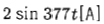
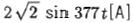
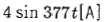
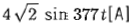
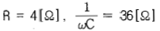
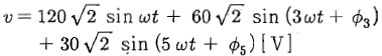

전기기능사 (2010-07-11 기출문제)
1과목: 전기 이론
1. 진공 중에서 비유전율 εr의 값은?
- 1
- 6.33 × 104
- 8.855 × 10-12
- 9 × 109
(정답률: 50%)

2. 저항 2Ω과 3Ω을 직렬로 접속했을 때의 합성컨덕턴스는?
- 0.2[℧]
- 1.5[℧]
- 5[℧]
- 6[℧]
(정답률: 64%)
3. R-L 직렬회로의 시정수 t[s]는 ?
- R/L[s]
- L/R[s]
- RL[s]
- 1/(RL)[s]
(정답률: 60%)
4. 계전기 접점의 불꽃 소거용 등으로 사용되는 것은?
- 서미스터
- 바리스터
- 터널 다이오드
- 제너 다이오드
(정답률: 55%)
5. 전도도(conductivity)의 단위는?(일부 컴퓨터 환경에서 특수문자가 보이지 않아서 괄호뒤에 다시 표기하여 둡니다.)
- [Ωㆍm]
- [℧ㆍm](모ㆍm)
- [Ω/m]
- [℧/m](모/m)
(정답률: 58%)
6. 전기저항 25Ω에 50V의 사인파 전압을 가할 때 전류의 순시값은?(단, 각속도 ω = 377[rad/sec]임)




(정답률: 74%)
7. 각 주파수 ω=100π[rad/s]일 대 주파수 f[Hz]는?
- 50[Hz]
- 60[Hz]
- 300[Hz]
- 360[Hz]
(정답률: 64%)
8. 단면적 4cm2, 자기 통로의 평균 길이 50㎝, 코일 감은 횟수 1000회, 비투자율 2000 인 환상 솔레노이드가 있다. 이 솔레노이드의 자체 인덕턴스는?(단 진공 중의 투자율 μo는 4π × 10-7임)
- 약 2[H]
- 약 20[H]
- 약 200[H]
- 약 2000[H]
(정답률: 29%)
9. 두개의 자체 인덕턴스를 직렬로 접속하여 합성 인덕턴스를 측정하였더니 95mH 이었다. 한쪽 인덕턴스를 반대 접속하여 측정하였더니 합성 인덕턴스가 15mH로 되었다. 두 코일의 상호 인덕턴스는?
- 20[mH]
- 40[mH]
- 80[mH]
- 160[mH]
(정답률: 91%)
10. 황산구리 용액에 10A의 전류를 60분간 흘린 경우 이 때 석출되는 구리의 양은?(단, 구리의 전기 화학 당량은 0.3293 × 10-3[g/C]임)
- 약 1.97[g]
- 약 5.93[g]
- 약 7.82[g]
- 약 11.86[g]
(정답률: 60%)
11. 200V의 3상 3선식 회로에 R = 4Ω, XL = 3Ω의 부하 3조를 Y 결선했을 때 부하전류는?
- 약 11.5[A]
- 약 23.1[A]
- 약 28.6[A]
- 약 40[A]
(정답률: 41%)
12. 선간전압이 13200V, 선전류가 800A, 역률 80% 부하의 소비전력은?
- 약 4878[kW]
- 약 8448[kW]
- 약 14632[kW]
- 약 25344[kW]
(정답률: 44%)
13.

을 직렬로 접속한 회로에
를 인가했을 때 흐르는 전류의 실효값은 약 몇 [A]인가?- 3.3[A]
- 4.8[A]
- 3.6[A]
- 6.8[A]
(정답률: 25%)
14. 동선의 길이를 2배로 늘리면 저항은 처음의 몇 배가 되는가?(단, 동선의 체적은 일정함)
- 2배
- 4배
- 8배
- 16배
(정답률: 70%)
15. 전류의 발열작용에 관한 법칙으로 가장 알맞은 것은?
- 옴의 법칙
- 패러데이의 법칙
- 줄의 법칙
- 키르히호프의 법칙
(정답률: 83%)
16. 1㎌, 3㎌, 6㎌의 콘덴서 3개를 병렬로 연결할 때 합성 정전용량은?
- 1.5[㎌]
- 5[㎌]
- 10[㎌]
- 18[㎌]
(정답률: 86%)
17. 진공 중에 10-6[C], 10-4[C]의 두 점전하가 1[m]의 간격을 두고 놓여있다. 두 전하 사이에 작용하는 힘은?
- 9 × 10-2[N]
- 18 × 10-2[N]
- 9 × 10-1[N]
- 18 × 10-1[N]
(정답률: 59%)
18. 저항 300Ω의 부하에서 90kW의 전력이 소비되었다면 이 때 흐르는 전류는?
- 약 3.3[A]
- 약 17.3[A]
- 약 30[A]
- 약 300[A]
(정답률: 48%)
19. 1.5V의 전위차로 3A의 전류가 3분 동안 흘렀을 때 한 일은?
- 1.5[J]
- 13.5[J]
- 810[J]
- 2430[J]
(정답률: 70%)
20. 어느 자기장에 의하여 생기는 자기장의 세기를 1/2로 하려면 자극으로 부터의 거리를 몇 배로 하여야 하는가?(오류 신고가 접수된 문제입니다. 반드시 정답과 해설을 확인하시기 바랍니다.)
- 루트 2배
- 루트 3배
- 2배
- 3배
(정답률: 42%)
2과목: 전기 기기
21. 권선 저항과 온도와의 관계는?
- 온도와는 무관하다.
- 온도가 상승함에 따라 권선 저항은 감소한다.
- 온도가 상승함에 따라 권선 저항은 증가한다.
- 온도가 상승함에 따라 권선의 저항은 증가와 감소를 반복한다.
(정답률: 65%)
22. 다이오드를 사용한 정류회로에서 다이오드를 여러 개 직렬로 연결하여 사용하는 경우의 설명으로 가장 옳은 것은?
- 다이오드를 과전류로부터 보호할 수 있다.
- 다이오드를 과전압으로부터 보호할 수 있다.
- 부하출력의 맥동률를 감소시킬 수 있다.
- 낮은 전압 전류에 적합하다.
(정답률: 47%)
23. 직류전동기에 있어 무부하일 때의 회전수는 n0은 1200rpm, 정격부하일 때의 회전수는 nn은 1150rpm이라 한다. 속도 변동률은?
- 약 3.45[%]
- 약 4.16[%]
- 약 4.35[%]
- 약 5.0[%]
(정답률: 43%)
24. 인버터(inverter)란?
- 교류를 직류로 변환
- 직류를 교류로 변환
- 교류를 교류로 변환
- 직류를 직류로 변환
(정답률: 76%)
25. 3상 동기 발전기를 병렬 운전시키는 경우 고려하지 않아도 되는 조건은?
- 상회전 방향이 같을 것
- 전압 파형이 같을 것
- 회전수가 같을 것
- 발생 전압이 같을 것
(정답률: 60%)
26. 단상 유도 전동기의 기동법 중에서 기동 토크가 가장 작은 것은?
- 반발 유도형
- 반발 기동형
- 콘덴서 기동형
- 분상 기동형
(정답률: 57%)
27. 유도 전동기의 회전자에 슬립 주파수의 전압을 공급하여 속도 제어를 하는 것은?
- 자극수 변환법
- 2차 여자법
- 2차 저항법
- 인버터 주파수 변환법
(정답률: 44%)
28. 직류 분권 전동기를 운전 중 계자 저항을 증가 시켰을 때의 회전 속도는?
- 증가한다.
- 감소한다.
- 변함없다.
- 정지한다.
(정답률: 59%)
29. 정격전압 250V, 정격출력 50kW의 외분권 복권발전기가 있다. 분권계자 저항이 25Ω일 때 전기자 전류는?
- 10[A]
- 210[A]
- 2000[A]
- 2010[A]
(정답률: 45%)
30. 일종의 전류 계전기로 보호 대상 설비에 유입되는 전류와 유출되는 전류의 차에 의해 동작하는 계전기는?
- 차동 계전기
- 전류 계전기
- 주파수 계전기
- 재폐로 계전기
(정답률: 72%)
31. 전동기의 제동에서 전동기가 가지는 운동 에너지를 전기 에너지로 변화시키고 이것을 전원에 변환하여 전력을 회생시킴과 동시에 제동하는 방법은?
- 발전제동(dynamic braking)
- 역전제동(plugging breaking)
- 맴돌이전류제동(eddy current braking)
- 회생제동(regenerative braking)
(정답률: 97%)
32. 50Hz, 500rpm의 동기 전동기에 직결하여 이것을 기동하기 위한 유도 전동기의 적당한 극수는?
- 4극
- 8극
- 10극
- 12극
(정답률: 36%)
33. 60Hz 3상 반파 정류 회로의 맥동 주파수는?
- 60Hz
- 120Hz
- 180Hz
- 360Hz
(정답률: 66%)
34. 3상 동기 전동기의 토크에 대한 설명으로 옳은 것은?
- 공급전압 크기에 비례한다.
- 공급전압 크기의 제곱에 비례한다.
- 부하각 크기에 반비례한다.
- 부하각 크기의 제곱에 비례한다.
(정답률: 43%)
35. 8극 900rpm의 교류 발전기로 병렬 운전하는 극수 6의 동기발전기의 회전수는?
- 675[rpm]
- 900[rpm]
- 1200[rpm]
- 1800[rpm]
(정답률: 66%)
36. 정지 상태에 있는 3상 유도전동기의 슬립 값은?
- ∞
- 0
- 1
- -1
(정답률: 52%)
37. 60Hz, 4극, 슬립 5%이 유도 전동기의 회전수는?
- 1710[rpm]
- 1746[rpm]
- 1800[rpm]
- 1890[rpm]
(정답률: 56%)
38. 변압기의 무부하인 경우에 1차 권선에 흐르는 전류는?
- 정격 전류
- 단락 전류
- 부하 전류
- 여자 전류
(정답률: 40%)
39. 퍼센트 저항 강하 1.8% 및 퍼센트 리액턴스 강하 2%인 변압기가 있다. 부하의 역률이 1일 때의 전압 변동률은?
- 1.8[%]
- 2.0[%]
- 2.7[%]
- 3.8[%]
(정답률: 39%)
40. 직류 발전기에 있어서 전기자 반작용이 생기는 요인이 되는 전류는?
- 동손에 의한 전류
- 전기자 권선에 의한 전류
- 계자 권선의 전류
- 규소 강판에 의한 전류
(정답률: 52%)
3과목: 전기 설비
41. 수전설비의 저압 배전반을 배전반 앞에서 계측기를 판독하기 위하여 앞면과 최소 몇 [m] 이상 유지하는 것을 원칙으로 하고 있는가?
- 0.6[m]
- 1.2[m]
- 1.5[m]
- 1.7[m]
(정답률: 39%)
42. 교류 380V를 사용하는 공장의 전선과 대지 사이의 절연저항은 몇 [MΩ] 이상이어야 하는가?(오류 신고가 접수된 문제입니다. 반드시 정답과 해설을 확인하시기 바랍니다.)
- 0.1[MΩ]
- 0.3[MΩ]
- 10[MΩ]
- 100[MΩ]
(정답률: 44%)
43. 가공 전선로의 지지물에 하중이 가하여지는 경우에 그 하중을 받는 지지물의 기초의 안전율은 일반적으로 얼마 이상이어야 하는가?
- 1.5
- 2.0
- 2.5
- 4.0
(정답률: 59%)
44. 노크아웃펀치(knockout punch)와 같은 용도의 것은?
- 리머(reamer)
- 벤더(bender)
- 클리퍼(cliper)
- 홀쏘(hole saw)
(정답률: 64%)
45. 가스 절연 개폐기나 가스 차단기에 사용되는 가스인 SF6의 성질이 아닌 것은?
- 같은 압력에서 공기의 2.5~3.5배의 절연 내력이 있다.
- 무색, 무취, 무해 가스이다.
- 가스 압력 3~4[kgf/cm2]에서는 절연내력은 절연유 이상이다.
- 소호능력은 공기보다 2.5배 정도 낮다.
(정답률: 59%)
46. 일반적으로 가공전선의 지지물에 취급자가 오르고 내리는데 사용하는 발판 볼트 등은 지표상 몇 [m] 미만에 시설하여서는 아니 되는가?
- 0.75[m]
- 1.2[m]
- 1.8[m]
- 2.0[m]
(정답률: 58%)
47. 전동기의 정.역 운전을 제어하는 회로에서 2개의 전자개폐기의 작동이 동시에 일어나지 않도록 하는 회로는?
- Y-△ 회로
- 자기유지 회로
- 촌동 회로
- 인터록 회로
(정답률: 70%)
48. 옥내에서 두 개 이상의 전선을 병렬로 사용하는 경우 동선은 각 전선의 굵기가 몇 [㎟] 이상이어야 하는가?
- 50[㎟]
- 70[㎟]
- 95[㎟]
- 150[㎟]
(정답률: 45%)
49. 제1종 접지공사 또는 제2종 접지공사에 사용하는 전지선을 사람이 접촉할 우려가 있는 곳에 시설하는 경우 접지 극은 지하 몇 [㎝]이상의 깊이에 매설하여야 하는가?(관련 규정 개정전 문제로 여기서는 기존 정답인 3번을 누르면 정답 처리됩니다. 자세한 내용은 해설을 참고하세요.)
- 30[㎝]
- 60[㎝]
- 75[㎝]
- 90[㎝]
(정답률: 98%)
50. 플로어덕트 부속품 중 박스의 플러그 구멍을 매우는 것의 명칭은?
- 덕트서포트
- 아이언플러그
- 덕트플러그
- 인서트마커
(정답률: 40%)
51. 정격전류가 30A인 저압전로의 과전류차단기를 배선용차단기로 사용하는 경우 정격전류의 2배의 전류가 통과하여 통과하였을 경우 몇 분 이내에 자동적으로 동작하여야 하는가?
- 1분
- 2분
- 60분
- 120분
(정답률: 55%)
52. 가요전선관 공사 방법에 대한 설명으로 잘못된 것은?
- 전선을 옥외용 비닐 절연전선을 제외한 절연 전선을 사용한다.
- 일반적으로 전선을 연선을 사용한다.
- 가요전선관 안에는 전선의 접속점이 없도록 한다.
- 사용전압 400V 이하의 저압의 경우에만 사용한다.
(정답률: 37%)
53. 특고압 수전설비의 결선기호와 명칭으로 잘못된 것은?
- CB - 차단기
- DS - 단로기
- LA - 피뢰기
- LF - 전력 퓨즈
(정답률: 53%)
54. 제3종 접지공사의 접지선으로 연동선을 사용한 경우 접지선의 굵기(공칭단면적)는 몇 [mm2] 이상이어야 하는가?(관련 규정 개정전 문제로 여기서는 기존 정답인 1번을 누르면 정답 처리됩니다. 자세한 내용은 해설을 참고하세요.)
- 2.5[mm2]
- 6[mm2]
- 8[mm2]
- 16[mm2]
(정답률: 59%)
55. 애자사용 공사에 의한 저압 옥내배선에서 전선 상호 간의 간격은 몇 [㎝] 이상이어야 하는가?
- 2.5[㎝]
- 6[㎝]
- 10[㎝]
- 12[㎝]
(정답률: 57%)
56. 가연선의 가스 또는 인화성 물질의 증기가 새거나 체류하여 전기설비가 발화원이 되어 폭발할 우려가 있는 곳에 있는 저압 옥내전기설비의 공사방법으로 가장 알맞은 것은?
- 금속관 공사
- 가요전선관 공사
- 플로어덕트 공사
- 애자 사용 공사
(정답률: 75%)
57. 합성수지제 가요전선관(PF관 및 CD관)의 호칭에 포함되지 않는 것은?
- 16
- 28
- 38
- 42
(정답률: 61%)
58. 금속 전선관을 직각 구부리기 할 때 굽힌 반지름 r은?(단, d는 금속 전선관의 안지름, D는 금속 전선관의 바깥 지름이다.)
- r = 6d + D/2
- r = 6d + D/4
- r = 2d + D/6
- r = 4d + D/6
(정답률: 48%)
59. 기수 단자에 전섭 접속시 진동 등으로 헐거워지는 염려가 있는 곳에 사용되는 것은?
- 스프링와셔
- 2중 볼트
- 삼각 볼트
- 접속기
(정답률: 79%)
60. 코드 상호, 캡타이어 케이블 상호 접속시 사용하여야 하는 것은?
- 와이어 커넥터
- 코드 접속기
- 케이블 타이
- 테이블 탭
(정답률: 58%)